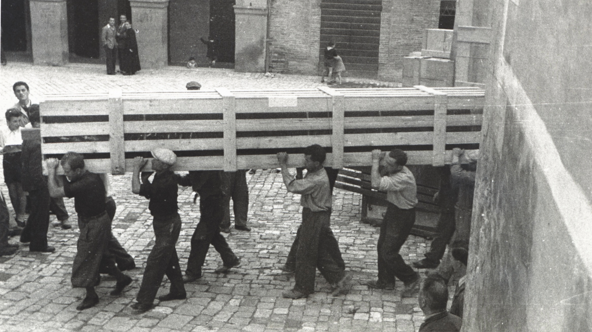

Nel contesto della salvaguardia del patrimonio storico-artistico durante la Seconda Guerra Mondiale è rilevante il contributo del Monuments, Fine Arts and Archives Program. Lo scopo del programma era quello di inviare ufficiali formati nell’ambito della Storia dell’Arte, comunemente noti come monuments men, nei paesi colpiti dalla guerra con il compito di individuare beni di particolare valore artistico e provvedere alla loro tutela.
I monuments men arrivarono in Italia nel 1943 dove, già all’indomani dell’entrata in guerra del paese, i funzionari del Governo stavano provvedendo alla tutela del patrimonio artistico. In virtù del loro operato, questi soprintendenti, ispettori, direttori di musei e storici dell’arte possono essere considerati monuments men e women, anche se i loro nomi non figurano nell’elenco ufficiale del MFAA.
A differenza degli ufficiali alleati, le cui schede biografiche si trovano sul sito della Monuments men and women Foundation, per quelli italiani manca un database. La presente ricerca è stata condotta con l’obiettivo di impostare tale banca dati.
I dati raccolti durante la ricerca hanno permesso di realizzare le schede prosopografiche delle figure analizzate.
Le operazioni di salvataggio del patrimonio artistico sono state accompagnate da un'ampia documentazione, qui consultabile.
Attraverso la Mappa interattiva è possibile individuare i luoghi dove queste vicende si sono svolte.
La Linea del tempo permette di collocare le operazioni di salvataggio dei beni culturali nel contesto della Seconda Guerra Mondiale.